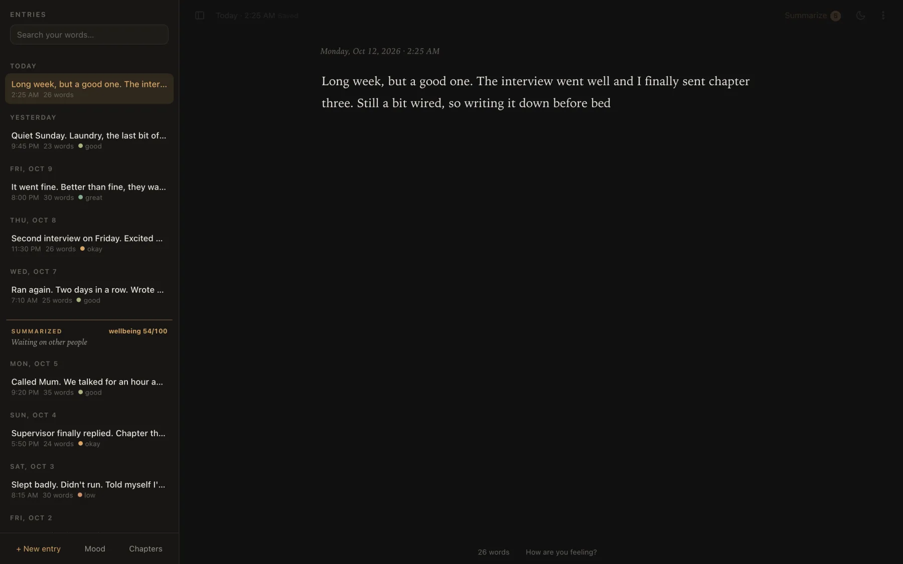
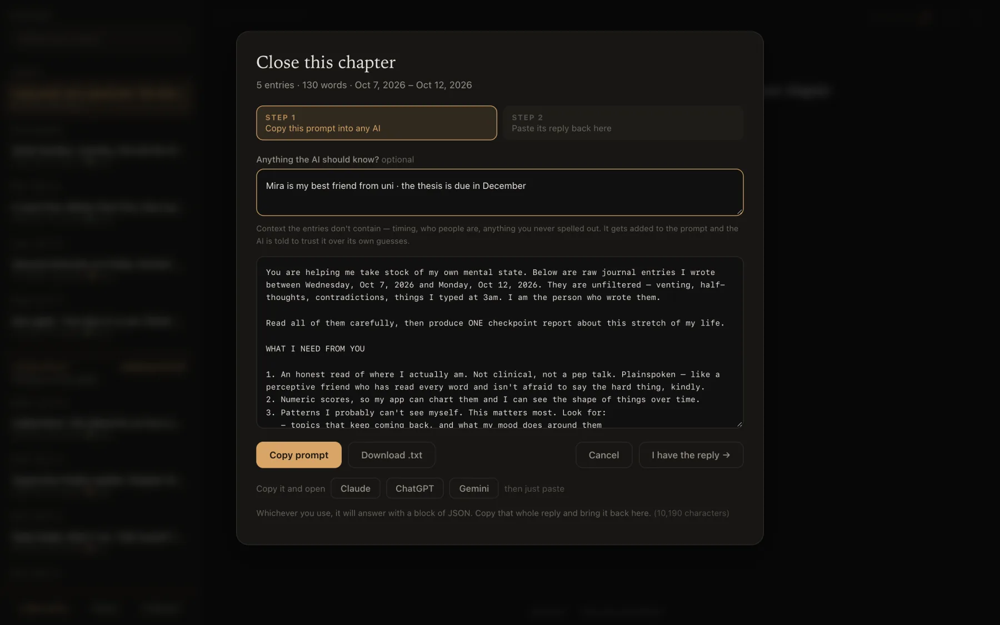
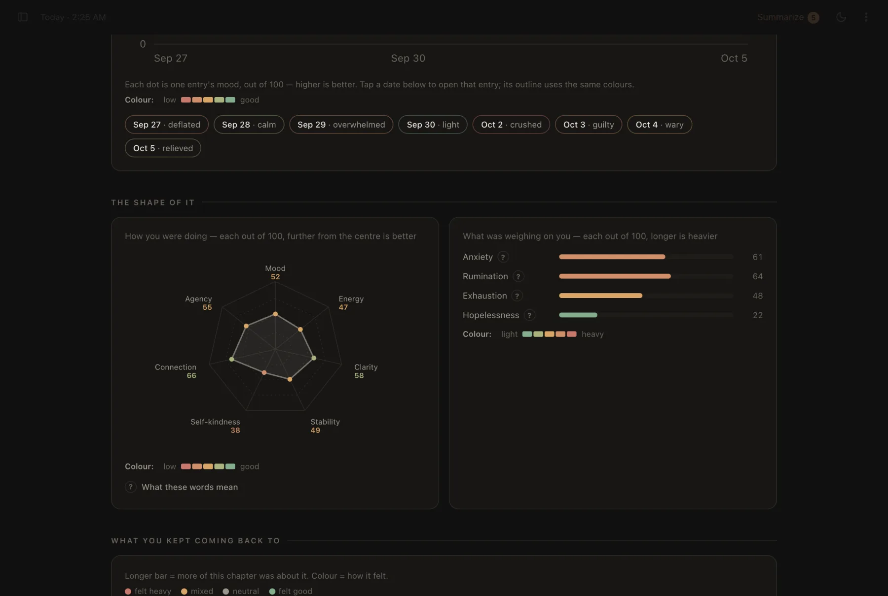
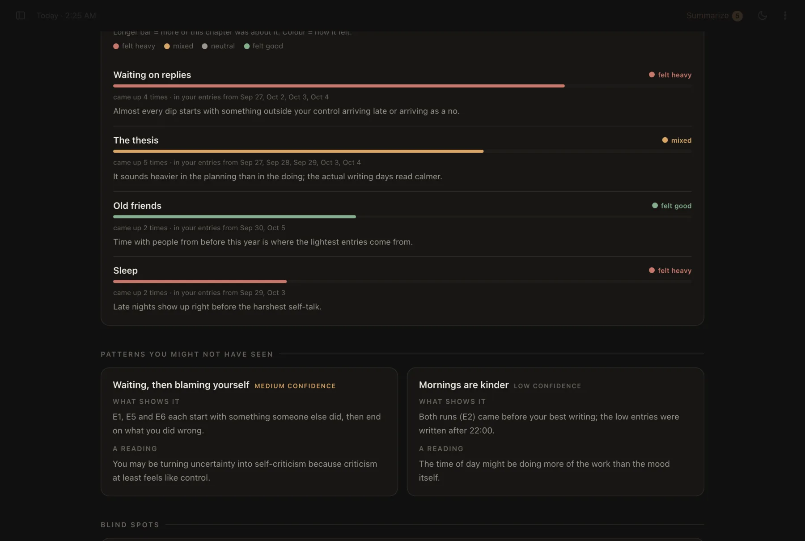
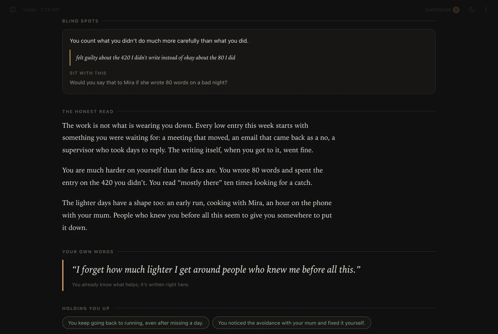
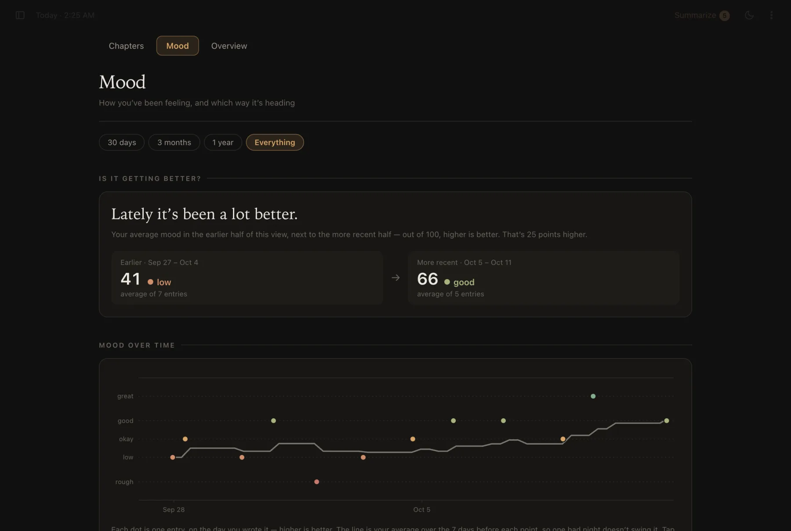

Always a blank page
Every visit opens a fresh entry with the cursor in it and the sidebar closed. You land on a page, not on everything you wrote last time.
For when your head is loud.
A private journal on the web. Open it and the cursor is already waiting; it saves as you type. When you’ve written enough, it hands the whole stretch to whichever AI you already use — and turns the reply into a chapter about you.

01Why it exists
Some nights I just need to rant. Not to post it, not to send it to anyone — just to get whatever’s in my head down somewhere, quickly.
The idea started with my AI journal for the iPad, which runs a language model on the device. That one lives on a single iPad. This is the version anyone can open: a web page, a link I can share.
So I made the web version, for me. Then I sent the link to a few friends — and they actually use it. Not once to be polite, but as the place they go when their head is loud. Honestly, that was a “wow” moment for me.
Each person gets their own journal, kept in their own browser. Sharing it is just sending the link; nobody can read anybody else’s.
02The key decision
The app never talks to a model. It writes the prompt; you carry it to whichever chatbot you already use, and paste the answer back. Two pastes instead of one click — and in exchange, the page itself is forbidden from sending anything anywhere.
Entries stay in your browser’s storage. Nothing to sign up for.
Every entry, tagged [E1]…[En], the last chapter’s scores, your notes, and the exact JSON schema to answer in.
Claude, ChatGPT, Gemini or anything else. Shortcut buttons copy the prompt and open the chat.
The app finds the JSON, repairs what it can, and checks every field.
Mood entry by entry, themes, patterns, blind spots, and an honest read.

03Try it
The prompt is the API contract, and the reply is the response — except it arrives with a friendly preamble, code fences, trailing commas and curly quotes. Pick a reply and run it through the same function the app uses.
What the app makes of it
Press “Read reply”.
The parsing is the app’s own extractJson, lifted as-is. The chapter preview on the right is simplified; the real one renders every field.
04A chapter
Close a chapter whenever you like. What comes back is meant to be read slowly, on a bad day: plain words, your own quotes, and an honest guess at what you can’t see from inside it.





Real screenshots of the app, filled with an invented journal. No one’s actual entries appear anywhere on this page.
05Small things
Every visit opens a fresh entry with the cursor in it and the sidebar closed. You land on a page, not on everything you wrote last time.
450 ms after you stop, and again when you switch tabs or close the window. Empty entries quietly disappear.
Rough, low, okay, good, great — under the page, without stealing focus from the words.
A mirror, not advice: what’s underneath, what you keep circling, and one question to sit with.
⌘ . blanks the page and renames the tab “New Tab” — for when someone walks past.
JSON backup, Markdown export, and chapters as PDF. A reminder appears when your last backup gets old.
06How it’s built
About 3,900 lines of HTML, CSS and JavaScript — no framework, no web fonts, every chart hand-drawn in SVG. It even runs straight from the file on disk.
function moodPoints(){
const ai = new Map();
liveCheckpoints().forEach(cp => (cp.data.entry_signals||[]).forEach(sig => {
const e = entryForSignal(cp, sig.id);
if(e && sig.mood != null) ai.set(e.id, { v:sig.mood, feel:sig.emotion });
}));
const out = [];
entriesSorted().forEach(e => {
if(!e.text.trim()) return;
const self = levelOf(e.selfMood), r = e.reflection, c = ai.get(e.id);
let p = null;
if(self) p = { v:self.v, src:"you" };
else if(r && r.mood != null) p = { v:r.mood, src:"reflection", feel:r.feeling || null };
else if(c) p = { v:c.v, src:"chapter", feel:c.feel || null };
if(p){ p.t = e.createdAt; p.id = e.id; out.push(p); }
});
return out;
}07Build notes
A mood can come from three places. Your own tap wins, then a reflection on that entry, then the chapter’s read of it — that’s the function above. On the chart your marks are filled dots and the AI’s are rings, so you can always tell who said what.
The five mood words sit at 15, 35, 50, 65 and 85 — the middle of each colour band — and the same band edges turn numbers back into words. A dot labelled “okay” is always okay-coloured.
Past roughly 45,000 characters, chat apps start refusing a paste or quietly dropping the oldest entries. When a chapter gets that long, the app offers to close a shorter one over the oldest entries and keep the rest queued.
The prompt tells the model to say when evidence is thin, never to diagnose, and never to label other people. In the app, a “Where these numbers come from” note says plainly that a small change in score is just how the AI read the words.